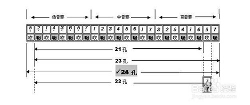
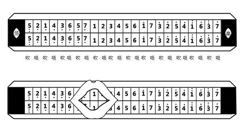
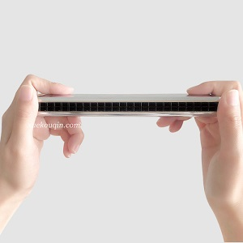
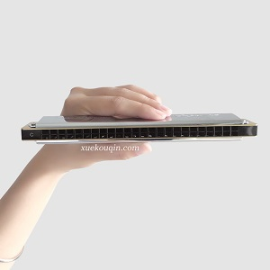
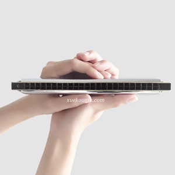
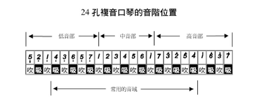

口琴常见的谱子有简谱、五线谱与口琴专用谱，初学者应以简谱为主，简谱上一般都会明确的数字和节奏，正好配上口琴吹孔上的数字，对于新手一目了然。在具体的学习中还应看到任何一个数字，在脑海中自动反应出相应的音。
简谱，是指一种简易的记谱法。有字母简谱和数字简谱两种。一般所称的简谱，系指数字简谱。数字简谱以可动唱名法为基础，用1、2、3、4、5、6、7代表音阶中的7个基本音级，读音为do、re、mi、fa、sol、la、si，休止以0表示。每一个数字的时值名相当于五线谱的4分音符。

24孔复音口琴大致分为三个音部，即低音部、中音部和高音部，每个音部各8个音，其吹或吸相应的孔就会出相应数字所对应的音。
1. 嘴唇拱起形成0字形，大小约可含到一孔(上下两格)。
2. 上下颚打开，使口腔内有充足的空间(口腔内像含鸡蛋般拱起)。
3. 将嘴唇含在琴口上，舌尖内缩不要触碰琴格。
4. 可以尝试吹出声音。

如此熟悉一段时间，达到看到任何一个简谱都能用相应的音符唱出来的效果，举一反三，到后来就可以练习到闭上眼睛不看谱唱出相应的音符。
正确的姿势要有优美的仪表，头正，身体直，收腹挺胸，全身放松，两手自然地挟着口琴，眼睛和脸部的要自然生动，随着乐曲的起伏而富有表情，切忌在吹奏过程中用踏脚或点头来打拍子。
吹奏复音口琴时，可以站着，也可以坐着，但必须得保证上半身挺直，抬头挺胸，身体不要晃动，头部呈平视的状态。除了姿势好看外，有两大好处：
1.有利于呼吸;口琴对呼吸的要求比较高，挺直的姿势会是气流更加顺畅。
2.弯腰低头等姿势会容易让口水流入口琴里，影响演奏效果。

采用胸腹联合呼吸，即运用胸腔、横膈膜和腹部肌肉共同控制气息的呼吸。其优点是，可以充分发挥呼吸器官的作用，使胸腔扩大，增大气息的容量，便于对气流进行调节，这样，即便减少换气，也能使吹奏圆滑而轻松。
应预先设计好乐曲应换气的地方，并采用嘴鼻一起呼吸。主要应用于乐曲的旋律连续的吹或吸时，感到气量不够的地方。需换气的地方应在乐谱上做好记号。要善于发现规律，来解决运气问题。

© 2021 自学口琴. All rights reserved | Designed by Julien